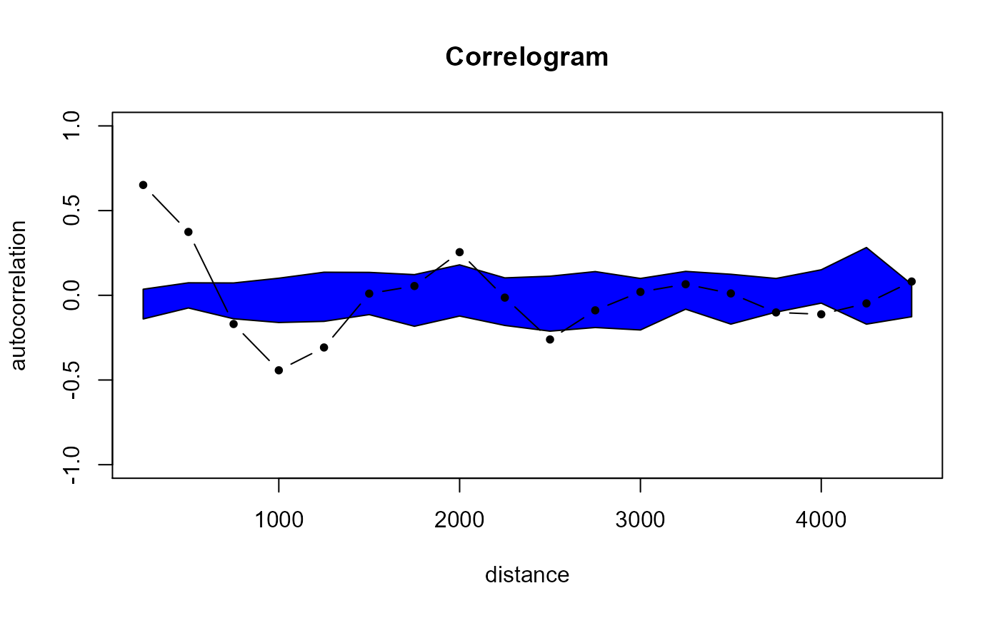

Calculates and plots a correlogram
correlogram(x, v, dist = 5000, dmatrix = FALSE, ns = 99, latlong = FALSE, ...)
| x | SpatialPointsDataFrame object |
|---|---|
| v | Test variable in x@data |
| dist | Distance of correlation lags, if latlong=TRUE units are in kilometers |
| dmatrix | Should the distance matrix be include in output (TRUE/FALSE) |
| ns | Number of simulations to derive simulation envelope |
| latlong | Coordinates are in latlong (TRUE/FALSE) |
| ... | Arguments passed to cor ('pearson', 'kendall' or 'spearman') |
A list object containing:
autocorrelation is a data.frame object with the following components
autocorrelation - Autocorrelation value for each distance lag
dist - Value of distance lag
lci - Lower confidence interval (p=0.025)
uci - Upper confidence interval (p=0.975)
CorrPlot recordedplot object to recall plot
dmatrix Distance matrix (if dmatrix=TRUE)
Jeffrey S. Evans jeffrey_evans@tnc.org
library(sp) data(meuse) coordinates(meuse) = ~x+y zinc.cg <- correlogram(x = meuse, v = meuse@data[,'zinc'], dist = 250, ns = 9)